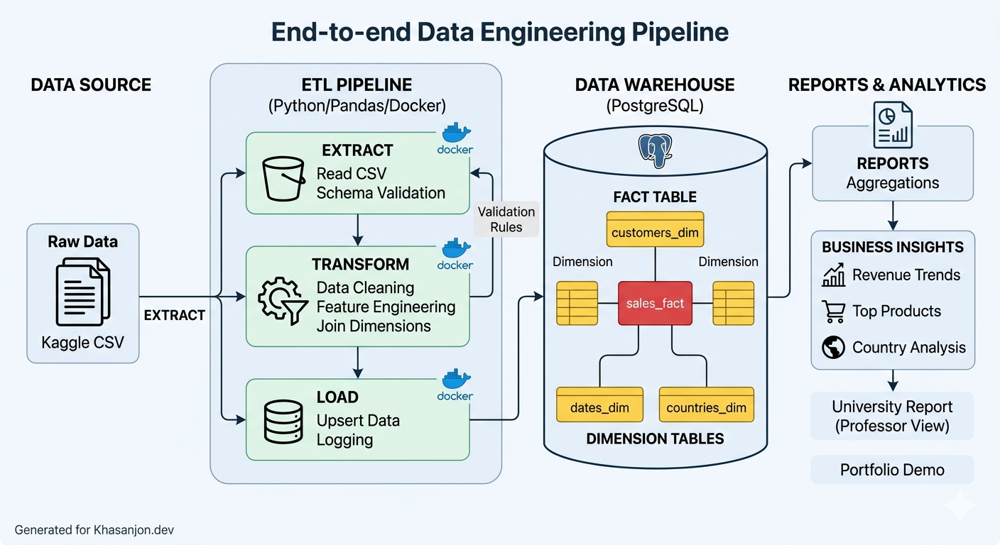

An end-to-end data engineering pipeline for processing and analyzing global e-commerce transactions, turning raw CSV data into actionable business intelligence.
Bridging the gap between raw data and strategic decision-making
Transactional data scattered across fragmented CSV files with no centralized analytics system. This creates data silos and prevents real-time visibility into global operations and performance metrics.
Structured data warehouse providing actionable insights:
Automate data extraction and cleaning.
Apply feature engineering and validation.
Implement a scalable Star Schema model.
Generate SQL-based business reports.
End-to-end data pipeline flow from ingestion to analytics

Raw Data → Extract → Transform → Load → Data Warehouse → Analytics & Reports
Denormalized schema optimized for fast analytical queries
ID, Name, Segment
ID, Description, Category
ID, Year, Month, Quarter
ID, Name, Region
Production-ready tools for data engineering
Revenue generated by top 10% of customers.
Highest revenue-generating country in 2026.
35% increase in sales during holiday seasons.